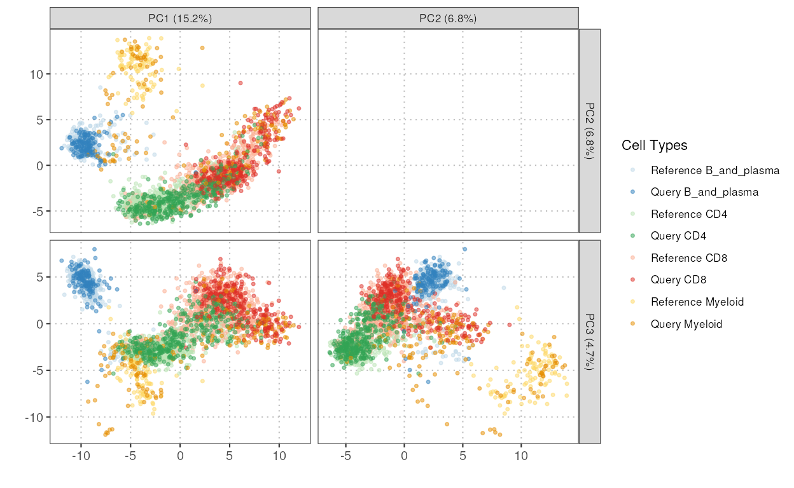
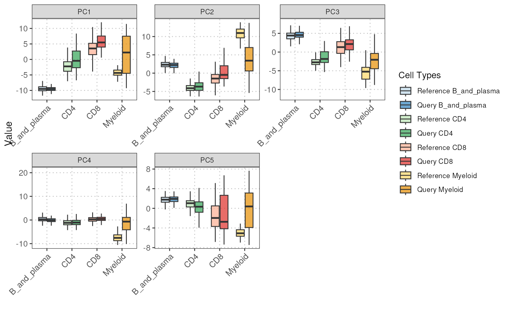
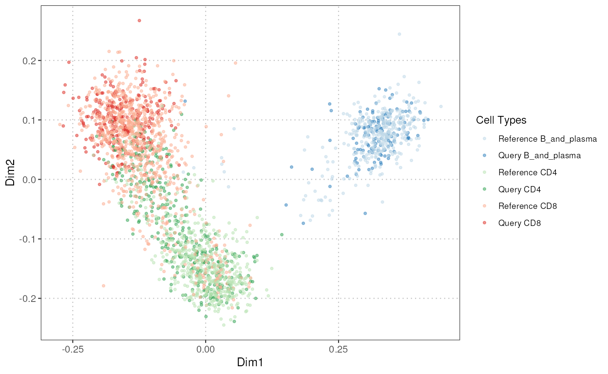
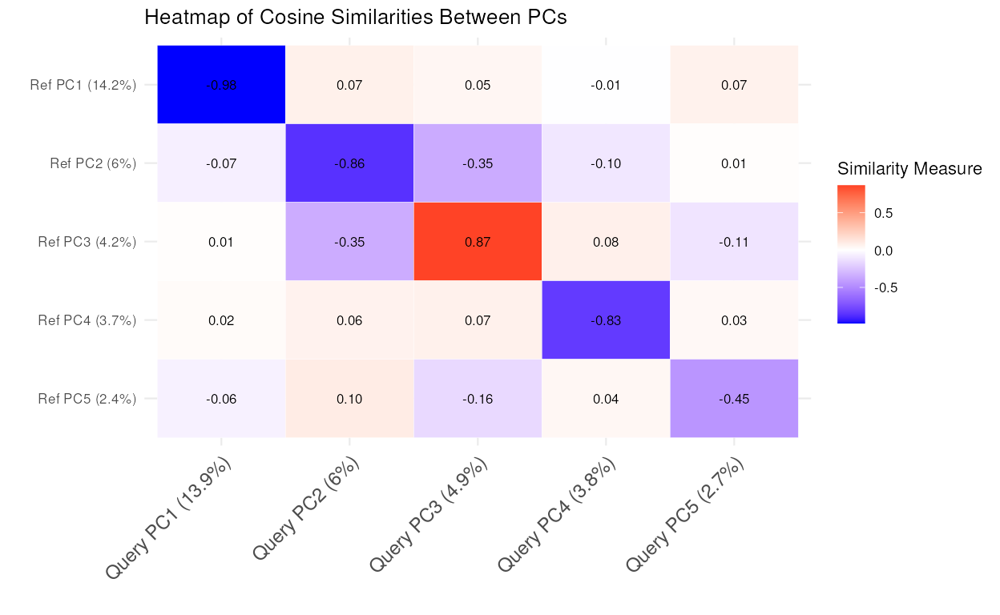
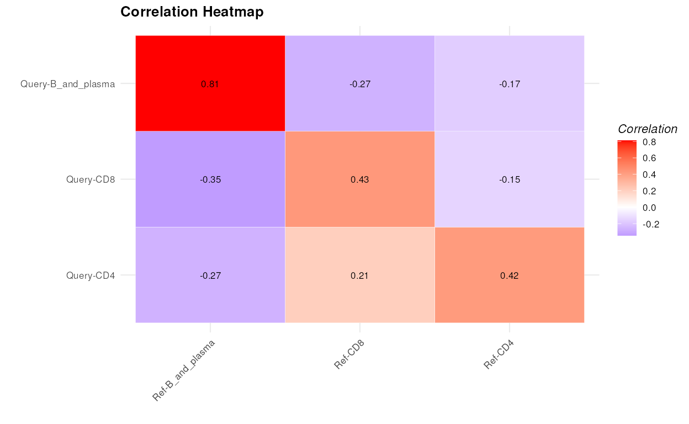
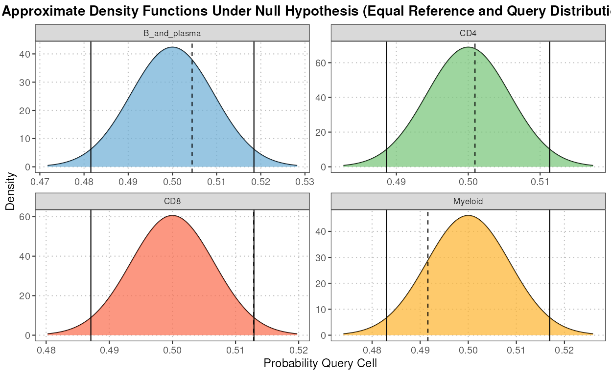
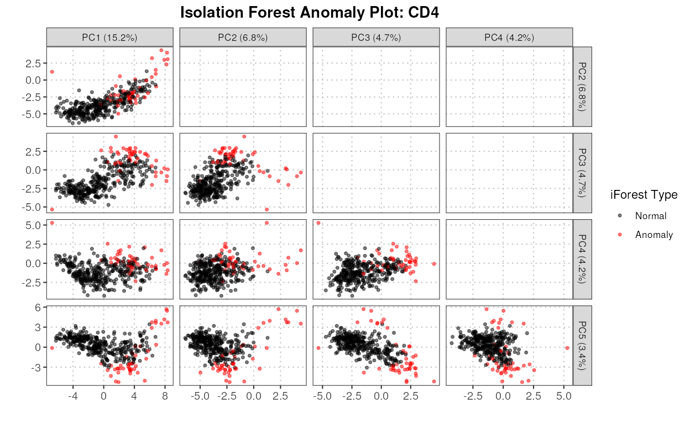
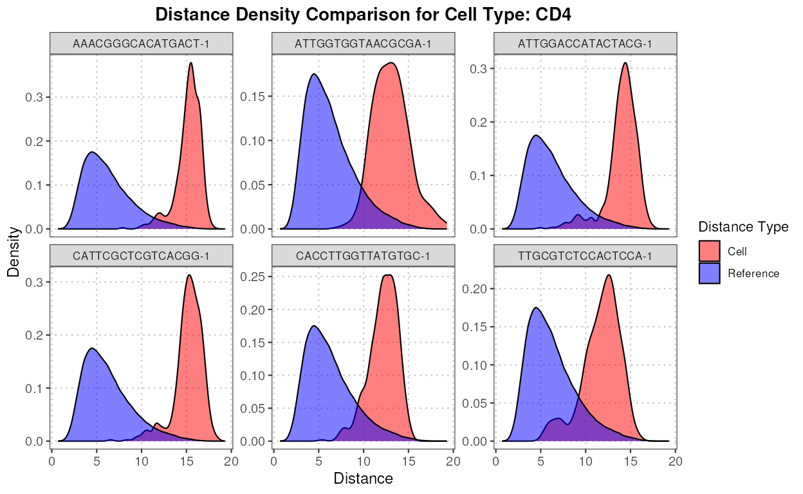
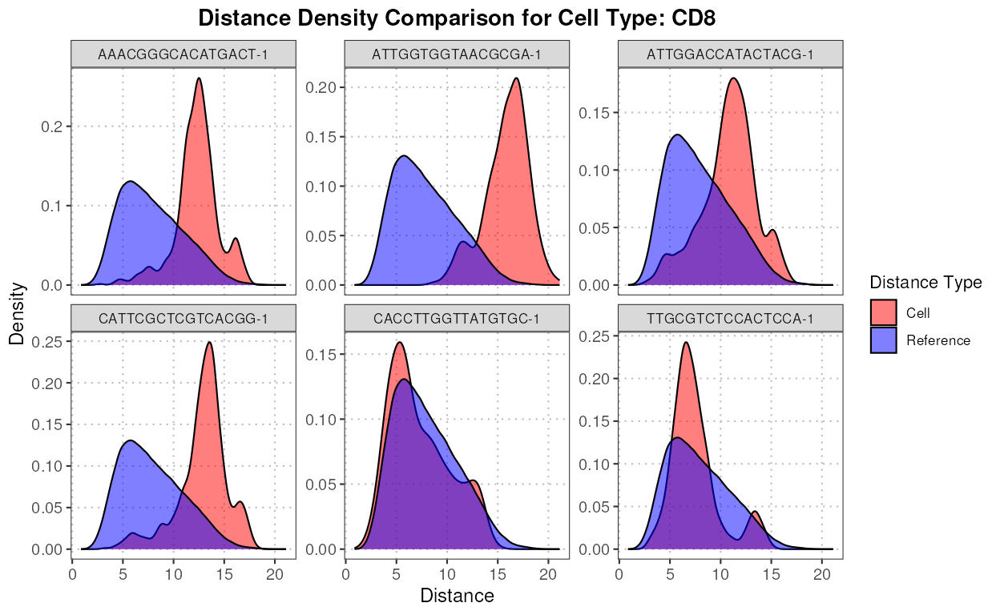

vignettes/BioC2024_scDiagnostics_Workshop.Rmd
BioC2024_scDiagnostics_Workshop.RmdAuthors: Anthony Christidis2, Andrew Ghazi3, Ludwig Geistlinger4.
Last modified: 22 July, 2024
scDiagnostics is a comprehensive toolkit designed for
the analysis and diagnostics of single-cell RNA sequencing (scRNA-seq)
data. This package provides functionalities for comparing principal
components, visualizing canonical correlation analysis (CCA) outputs,
and plotting cell type-specific MDS and PCA projections, among other
tasks.
Before attending this workshop, participants should have a basic
understanding of single-cell RNA sequencing (scRNA-seq) data analysis
and familiarity with Bioconductor packages. Specifically, knowledge of
the SingleCellExperiment package will be useful for working
with single-cell datasets. While familiarity with dimensionality
reduction techniques, such as Principal Component Analysis (PCA), and
statistical tests will enhance the learning experience, it is not
required.
A solid foundation in single-cell analysis techniques and tools will
significantly benefit those looking to fully leverage the capabilities
of specialized packages like scDiagnostics.” Basic
proficiency in R and R Markdown is also recommended to follow along with
the workshop exercises.
First, let’s load the necessary libraries and data.
# Load necessary libraries
library(scDiagnostics)
library(scran)
library(scater)We will use the following datasets available in
scDiagnostics for the workshop. These datasets are
processed versions of the dataset
HeOrganAtlasData(tissue = c("Marrow")) in the Bioconductor
package scRNAseq.
We will also create a dataset where we extract only one cell type (CD4) from the data. We use the SingleR annotation to subset the data. THis will allow us to evaluate how well aligned the CD4 cells are between the reference and query datasets.
# Subset data for CD4
reference_data_subset <- reference_data[, which(reference_data$expert_annotation == "CD4")]
query_data_subset <- query_data[, which(query_data$SingleR_annotation == "CD4")]
# Selecting highly variable genes
ref_top_genes <- getTopHVGs(reference_data_subset, n = 500)
query_top_genes <- getTopHVGs(query_data_subset, n = 500)
# Intersect the gene symbols to obtain common genes
common_genes <- intersect(ref_top_genes, query_top_genes)
reference_data_subset <- reference_data_subset[common_genes,]
query_data_subset <- query_data_subset[common_genes,]
# Run PCA
reference_data_subset <- runPCA(reference_data_subset)
query_data_subset <- runPCA(query_data_subset)An example for a 45-minute workshop:
| Activity | Time |
|---|---|
| Introduction to Annotation Diagnostics | 10m |
| Brief Overview | 10m |
| Example Workflow | 15m |
| Questions and Answers | 10m |
The goal of this workshop is to provide participants with a thorough
understanding of the scDiagnostics package, enabling them
to effectively analyze and interpret single-cell RNA sequencing data.
Participants will gain hands-on experience in utilizing the package’s
diverse functionalities to enhance their single-cell data analysis
workflows.
By the end of this workshop, participants will understand the
capabilities and applications of scDiagnostics, master
visualization techniques for both multiple and single cell types,
calculate correlations and distances between cell types, perform and
interpret statistical tests, detect and visualize anomalies, evaluate
data quality and gene overlap, and utilize additional analytical
tools.
By the end of this workshop, participants will be able to:
plotCellTypePCA
This function plots the principal components for different cell types in the query and reference datasets.
pc_plot <- plotCellTypePCA(query_data = query_data,
reference_data = reference_data,
cell_types = c("CD4", "CD8", "B_and_plasma", "Myeloid"),
query_cell_type_col = "SingleR_annotation",
ref_cell_type_col = "expert_annotation",
pc_subset = 1:3)
pc_plot
boxplotPCA
This function generates a boxplot visualization of principal components (PCs) for different cell types across two datasets (query and reference).
pc_boxplot <- boxplotPCA(query_data = query_data,
reference_data = reference_data,
query_cell_type_col = "SingleR_annotation",
ref_cell_type_col = "expert_annotation",
cell_types = c("CD4", "CD8", "B_and_plasma", "Myeloid"),
pc_subset = 1:5)
pc_boxplot
plotCellTypeMDS
This function facilitates the assessment of similarity between reference and query datasets through Multidimensional Scaling (MDS) scatter plots. It allows the visualization of cell types based on a dissimilarity matrix computed from a user-selected gene set.
mds_plot <- plotCellTypeMDS(query_data = query_data,
reference_data = reference_data,
cell_types = c("CD4", "CD8", "B_and_plasma"),
query_cell_type_col = "SingleR_annotation",
ref_cell_type_col = "expert_annotation")
mds_plot
comparePCA
This function compares the principal components (PCs) obtained from separate PCA on reference and query datasets for a single cell type using either cosine similarity or correlation.
The S3 plot method generates a heatmap to visualize the cosine similarities between principal components from the output of the comparePCA function.
similarity_mat <- comparePCA(query_data = query_data_subset,
reference_data = reference_data_subset,
query_cell_type_col = "SingleR_annotation",
ref_cell_type_col = "expert_annotation",
pc_subset = 1:5)
plot(similarity_mat)
calculateVarImpOverlap
This function uses the Random Forest algorithm to calculate the importance of genes in differentiating between cell types within both a reference dataset and a query dataset. The function then compares the top genes identified in both datasets to determine the overlap in their importance scores.
var_imp <- calculateVarImpOverlap(reference_data = reference_data,
query_data = query_data,
ref_cell_type_col = "expert_annotation",
query_cell_type_col = "SingleR_annotation")
var_imp[["var_imp_comparison"]]
#> B_and_plasma-CD8 B_and_plasma-CD4 B_and_plasma-Myeloid
#> 0.80 0.88 0.34
#> CD8-CD4 CD8-Myeloid CD4-Myeloid
#> 0.70 0.24 0.40calculateAveragePairwiseCorrelation
Computes the average pairwise correlations between specified cell types in single-cell gene expression data.
The S3 plot method takes the output of the
calculateAveragePairwiseCorrelation function, which should
be a matrix of pairwise correlations, and plots it as a heatmap.
cor_matrix_avg <- calculateAveragePairwiseCorrelation(query_data = query_data,
reference_data = reference_data,
query_cell_type_col = "SingleR_annotation",
ref_cell_type_col = "expert_annotation",
cell_types = c("CD4", "CD8", "B_and_plasma"),
pc_subset = 1:5,
correlation_method = "spearman")
plot(cor_matrix_avg)
calculateNearestNeighborProbabilities
This function computes the probabilities for each query cell of belonging to either the reference or query dataset for each cell type using nearest neighbor analysis.
The S3 plot method generates a density plot showing the distribution of probabilities for each cell of belonging to either the reference or query dataset for each cell type.
nn_output <- calculateNearestNeighborProbabilities(query_data = query_data,
reference_data = reference_data,
query_cell_type_col = "SingleR_annotation",
ref_cell_type_col = "expert_annotation",
pc_subset = 1:5)
plot(nn_output)
calculateHotellingPValue
This function calculates Hotelling’s T-squared statistic for comparing multivariate means between reference and query datasets, projected onto a subset of principal components (PCs). It performs a permutation test to obtain p-values for each cell type specified.
p_values <- calculateHotellingPValue(query_data = query_data,
reference_data = reference_data,
query_cell_type_col = "SingleR_annotation",
ref_cell_type_col = "expert_annotation",
pc_subset = 1:5)
round(p_values, 5)
#> B_and_plasma CD8 CD4 Myeloid
#> 0.006 0.000 0.000 0.000detectAnomaly
This function projects the query data onto the PCA space of the reference data. An isolation forest is then built on the reference data to identify anomalies in the query data based on their PCA projections. If no query dataset is provided by the user, the anomaly scores are computed on the reference data itself. Anomaly scores for the data with all combined cell types are also provided as part of the output.
The S3 plot method extracts the specified PCs from the given anomaly detection object and generates scatter plots for each pair of PCs. It uses ggplot2 to create a faceted plot where each facet represents a pair of PCs. Anomalies are highlighted in red, while normal points are shown in black.
anomaly_output <- detectAnomaly(reference_data = reference_data,
query_data = query_data,
ref_cell_type_col = "expert_annotation",
query_cell_type_col = "SingleR_annotation",
pc_subset = 1:5,
n_tree = 500,
anomaly_treshold = 0.6)
plot(anomaly_output,
cell_type = "CD4",
pc_subset = 1:5,
data_type = c("query", "reference"))
First let us see how well the SingleR annotation
performed
table(Expert_Annotation = query_data$expert_annotation,
SingleR = query_data$SingleR_annotation)
#> SingleR
#> Expert_Annotation B_and_plasma CD4 CD8 Myeloid
#> B_and_plasma 136 0 0 10
#> CD4 0 190 1 13
#> CD8 0 134 196 29
#> Myeloid 0 0 0 40We can see that according to expert annotation, a lot of CD8 cells
were incorrectly labeled as CD4 cells by SingleR. Let’s
identify some of these cells (the top 5 deviating cells for CD4).
First, we compute the distances from each query cell to each reference cell.
distance_data <- calculateCellDistances(query_data = query_data,
reference_data = reference_data,
query_cell_type_col = "SingleR_annotation",
ref_cell_type_col = "expert_annotation",
pc_subset = 1:10) Now, let’s compute the top six anomalies for CD4 using the anomaly detection function.
cd4_anomalies <- detectAnomaly(reference_data = reference_data,
query_data = query_data,
query_cell_type_col = "SingleR_annotation",
ref_cell_type_col = "expert_annotation",
pc_subset = 1:10,
n_tree = 500,
anomaly_treshold = 0.5)$CD4
cd4_top6_anomalies <- names(sort(cd4_anomalies$query_anomaly_scores, decreasing = TRUE)[1:6])Next, we plot the densities of the distances for each of these anomalous cells for CD4 and CD8.
plot(distance_data, ref_cell_type = "CD4", cell_names = cd4_top6_anomalies)
plot(distance_data, ref_cell_type = "CD8", cell_names = cd4_top6_anomalies)
We can also compute some measures of similarity between these cells and all cell types.
overlap_measures <- calculateCellDistancesSimilarity(query_data = query_data,
reference_data = reference_data,
cell_names = cd4_top6_anomalies,
query_cell_type_col = "SingleR_annotation",
ref_cell_type_col = "expert_annotation",
pc_subset = 1:10)
overlap_measures
#> $bhattacharyya_coef
#> Cell B_and_plasma CD8 CD4 Myeloid
#> 1 AAACGGGCACATGACT-1 0.1925182 0.7128711 0.2116577 0.07436962
#> 2 ATTGGTGGTAACGCGA-1 0.4236378 0.3799852 0.3830778 0.27169272
#> 3 ATTGGACCATACTACG-1 0.2097601 0.8765028 0.3656771 0.09452698
#> 4 CATTCGCTCGTCACGG-1 0.1363147 0.7006176 0.2448559 0.05778528
#> 5 CACCTTGGTTATGTGC-1 0.2452612 0.9885897 0.4514740 0.04147370
#> 6 TTGCGTCTCCACTCCA-1 0.2741303 0.9457587 0.5678963 0.12581074
#>
#> $hellinger_dist
#> Cell B_and_plasma CD8 CD4 Myeloid
#> 1 AAACGGGCACATGACT-1 0.8985999 0.5358441 0.8878864 0.9620969
#> 2 ATTGGTGGTAACGCGA-1 0.7591853 0.7874102 0.7854439 0.8534092
#> 3 ATTGGACCATACTACG-1 0.8889544 0.3514217 0.7964439 0.9515635
#> 4 CATTCGCTCGTCACGG-1 0.9293467 0.5471585 0.8689903 0.9706775
#> 5 CACCTTGGTTATGTGC-1 0.8687570 0.1068190 0.7406254 0.9790436
#> 6 TTGCGTCTCCACTCCA-1 0.8519799 0.2328977 0.6573459 0.9349809